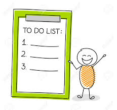

Just Do it.
To-Do List 
Add
Total tasks:
0
Forget about your lists and do what you can because that's all you can do.
Implement whatever organizational system works best for you, but then be sure to review your to-do list at least once a week.